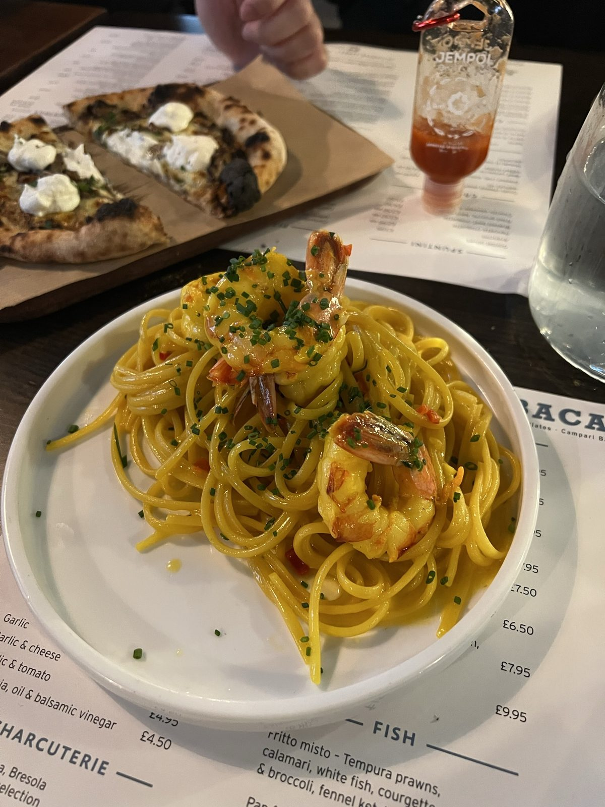
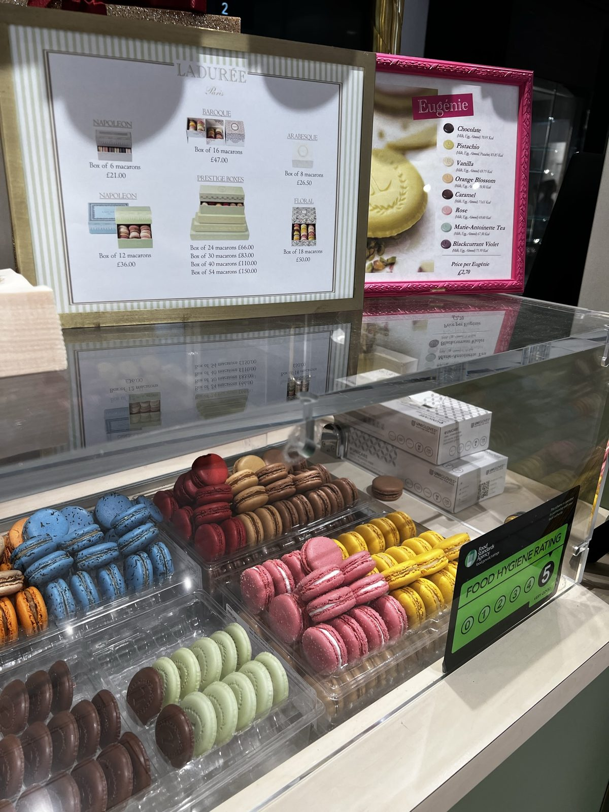
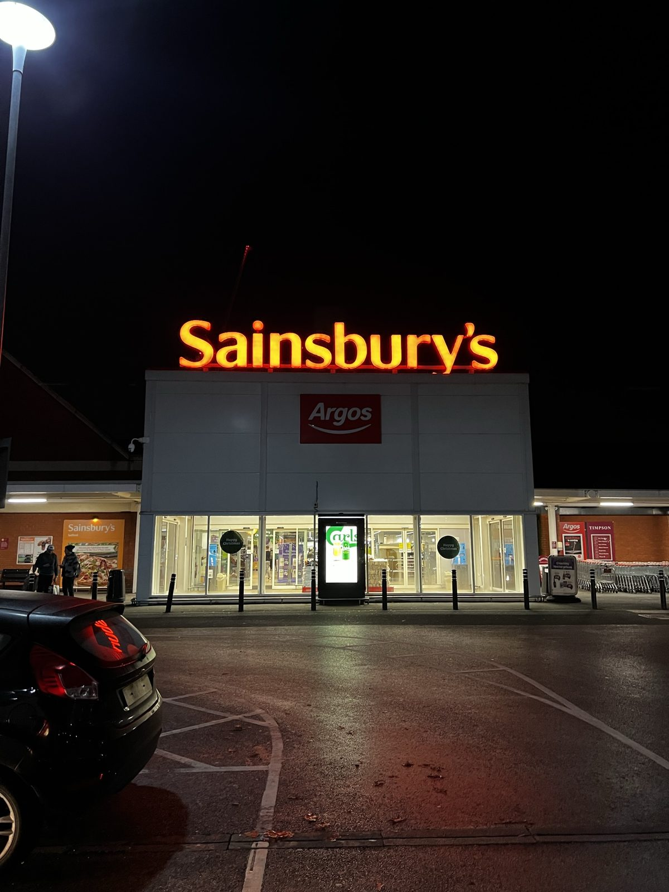

10-12 Nov / Windsor - Manchester - Blackpool
The road north became less polished, and more memorable.
This chapter is the in-between stretch: Windsor for the classic stone mood, then Manchester and Blackpool for practical meals, snack stops, supermarket nights, and the feeling of the trip slowly changing pace.
Back to UK and Scotland trip
Windsor
Castle walls made this stop feel properly old-world.
Windsor was the neat, classic part of the road north: stone walls, trimmed grass, and that very British feeling of history being kept polished for visitors. It felt formal in a way London did not.
This stop works less as a dramatic story beat and more as a clean bridge between the capital and the messier road-trip middle.
Windsor felt composed and old-fashioned, like a cleaned-up pause before the road got less polished.
Manchester
Food became the easiest way to remember the stop.
Manchester feels clearest to me through food: a table with pasta and pizza, a macaron display, and the kind of practical little errands that always sneak into a long trip.
It was not a postcard chapter, and that is actually why it works here. This was the middle of the route, when the trip became less about landmarks and more about keeping ourselves warm, fed, and moving.



Not every chapter needs a famous view. Sometimes the memory is pasta, sweets, and a supermarket run.
Blackpool
A small seaside edge before Scotland.
Blackpool sits in my memory as a short pause before Scotland. It was not the biggest visual moment, but it gave the route a seaside edge before the scenery turned colder, wider, and moodier.
A small change of scenery before the trip leaned fully into Scotland.
Personal take: this chapter is more road diary than highlight reel. It connects the polished London/Windsor start to the atmospheric Scotland half, and that makes it useful.